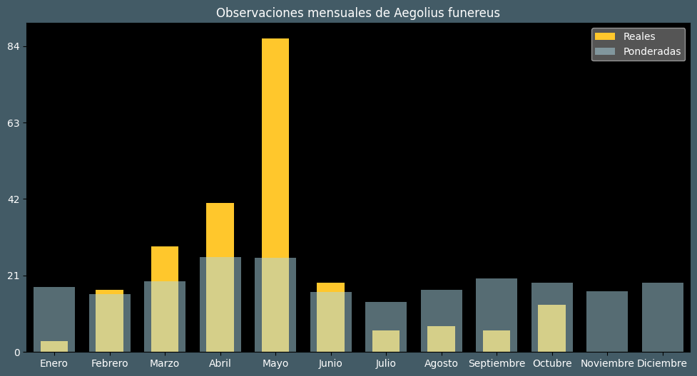

Observaciones por mes
Observations por hora

Categoría IUCN: LC
Género: Aegolius
Familia: Strigidae
Orden: Strigiformes
Descubrimiento: Linnaeus (1758)
| Idioma | Nombre |
|---|---|
| Afrikaans (af) | ? |
| Arabic (ar) | ? |
| Belarusian (be) | Касматаногi сыч |
| Bulgarian (bg) | Пернатонога кукумявка |
| Catalan (ca) | Mussol pirinenc |
| Chinese (zh) | 鬼鸮 |
| Chinese traditional (zh-TW) | 鬼鴞 |
| Croatian (hr) | Planinski ćuk |
| Czech (cs) | Sýc rousný |
| Danish (da) | Perleugle |
| Dutch (nl) | Ruigpootuil |
| English (en) | Boreal owl |
| Estonian (et) | Karvasjalg-kakk e. laanekakk |
| Finnish (fi) | Helmipöllö |
| French (fr) | Nyctale de tengmalm |
| German (de) | Raufußkauz |
| Greek (el) | Αιγωλιός |
| Hebrew (he) | כוס חום |
| Hungarian (hu) | Gatyáskuvik |
| Icelandic (is) | Skálmugla |
| Indonesian (id) | ? |
| Italian (it) | Civetta capogrosso |
| Japanese (ja) | キンメフクロウ |
| Korean (ko) | ? |
| Latvian (lv) | Bikšainais apogs |
| Lithuanian (lt) | Paprastoji lututė |
| Maceodnian (mk) | Шумска кукумјавка |
| Malayalam (ml) | ? |
| North_sami (se) | Idjaloddi |
| Norwegian (no) | Perleugle |
| Persian (fa) | ? |
| Polish (pl) | Włochatka (zwyczajna) |
| Portuguese (pt) | Mocho-funéreo |
| Russian (ru) | Мохноногий сыч |
| Serbian (sr) | Gaćasta kukumavka |
| Slovak (sk) | Pôtik kapcavý |
| Spanish (es) | Mochuelo boreal |
| Swedish (sv) | Pärluggla |
| Thai (th) | ? |
| Turkish (tr) | Paçalı baykuş |
| Ukrainian (uk) | Сич волохатий |